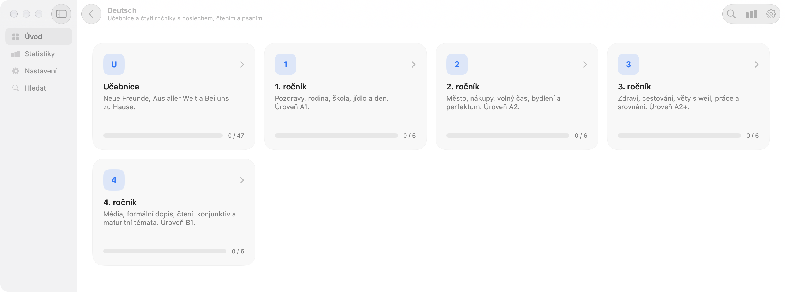
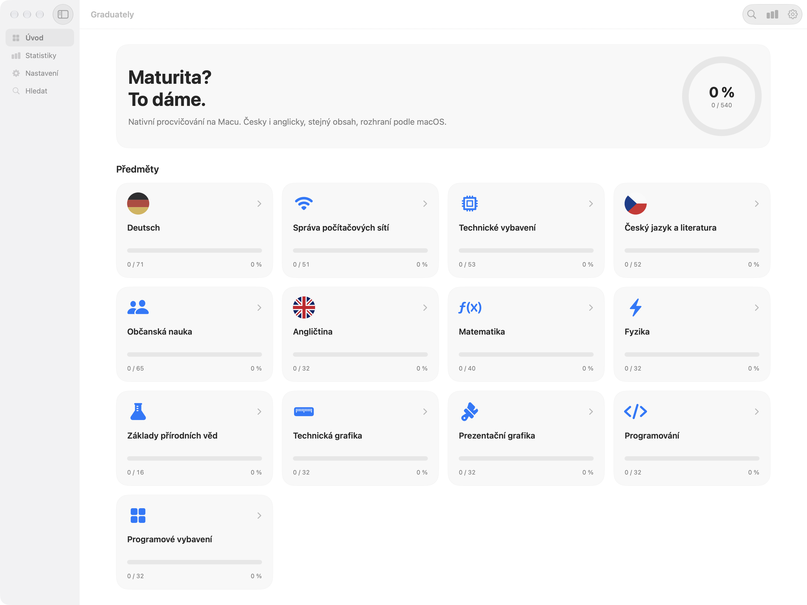
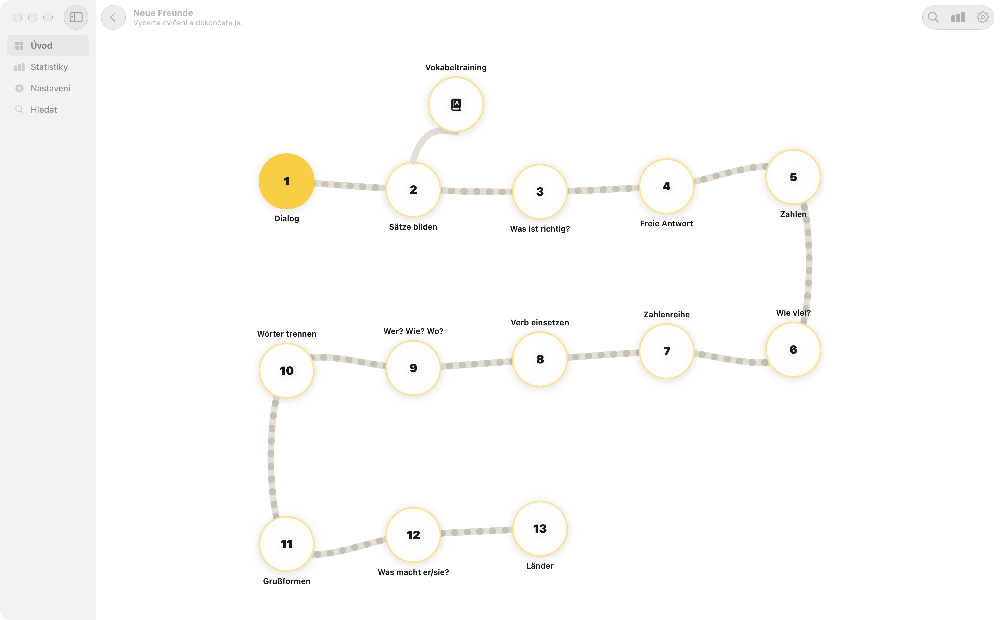

Ročníky, učebnice a četba
Každý předmět má vlastní cestu rozdělenou na ročníky, lekce nebo knihy. U němčiny nechybí učebnice Neue Freunde, Aus aller Welt a Bei uns zu Hause i čtyři ročníky od A1 po B1.

Maturita? To dáme.
Procvičování k maturitě v jednom okně — všech 13 předmětů otevřených, česky i anglicky, se statistikami a automatickými aktualizacemi.

Všechny předměty v aplikaci jsou odemčené — od jazyků a IT přes grafiku a programování až po matematiku, fyziku a společenské vědy.
Učebnice (Neue Freunde, Aus aller Welt, Bei uns zu Hause) a 4 ročníky, 24 lekcí od A1 k B1: poslech, čtení, psaní, doplňování a kvízy
4 ročníky: 1. ročník má 27 lekcí (adresy, modely, přepínače a bezdrát), ročníky 2–4 po 8 lekcích (VLAN, směrování, firewall, návrh a maturita)
4 ročníky: 1. ročník má 29 lekcí (architektura, data, skříň, deska, karty, disky a vstup), ročníky 2–4 po 8 lekcích (monitory, sestavení, RAID, servery, údržba)
4 ročníky AutoCADu, v každém 8 lekcí: výkres a souřadnice, úpravy a kóty, pohledy a tisk, 3D a maturitní zadání
4 ročníky, v každém 8 lekcí: Photoshop od pixelu po plakát, Premiere Pro a ve čtvrtém ročníku Illustrator, After Effects a InDesign
4 ročníky, v každém 8 lekcí: Windows a licence, Word a Excel, Access a MySQL, pak WordPress, Power BI, dávkové soubory a zásady
4 ročníky C# po vzoru W3Schools — u každé lekce se kód píše a spouští vedle výkladu, od výpisu po třídy, LINQ a async
Literatura (4 ročníky, 32 lekcí podle osnov středních škol), mluvnice (20 cvičení) a maturitní četba (82 knih: zápisky, kvíz, sestavení děje)
Opakování základní školy a 4 ročníky, 40 lekcí; příklady se píšou a kontrolují, u geometrie jde i rýsovat na mřížku
4 ročníky, 32 lekcí podle osnov středních škol (mechanika, teplo a vlny, elektřina a magnetismus, optika až astrofyzika)
Chemie a biologie, v každé 8 lekcí (od atomu a buňky po biochemii a ekologii) s výkladem a kvízem
4 ročníky (17 + 16 + 16 + 16 lekcí): člověk v lidském společenství, občan, právo, hospodářství, svět a filozofie
4 ročníky, 32 lekcí podle osnov gymnázia (A2 až maturita): poslech, čtení, psaní, doplňování, kvízy a ročníkové testy
Statistiky, hledání (lupa nebo Cmd/Ctrl+K), deset barevných témat, tmavý i světlý režim a přepínač čeština / angličtina.
Každý předmět má vlastní cestu rozdělenou na ročníky, lekce nebo knihy. U němčiny nechybí učebnice Neue Freunde, Aus aller Welt a Bei uns zu Hause i čtyři ročníky od A1 po B1.

Výklad, poslech, čtení, psaní, doplňování, kvízy a vokabeltraining. V programování se navíc píše a spouští C# přímo vedle výkladu a u geometrie lze rýsovat na mřížku.

Stáhni zip, rozbal ho a otevři instalátor (žádný Terminál). Instalátor si stáhne aktuální commit z větve builds a aplikace se pak aktualizuje sama.
Hotové balíčky bez instalátoru najdeš ve větvi builds, zdrojáky a návod k sestavení (SwiftUI + Kotlin Compose) na GitHubu.